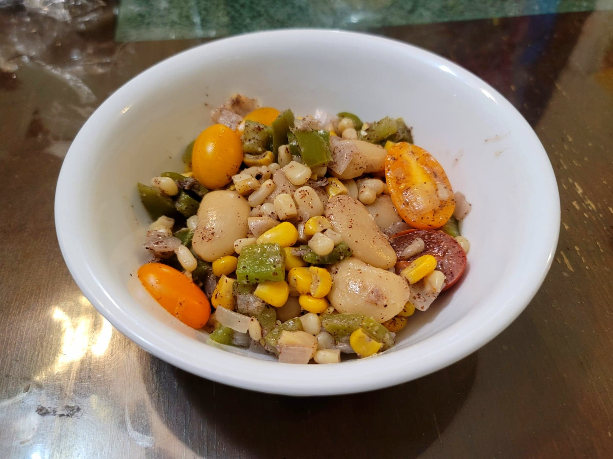

Succotash

Ingredients:
- 1 Green bell pepper, diced
- 2 cups Canned lima beans
- 2 cups Corn
- 2-3 Wild onions, diced
- 1 cup Water
- 12~ Cherry tomatoes, halved
- 2 tbsp Sunny butter
- 1 tbsp Sumac
- Salt, to taste
- Crushed juniper berries, to taste
Instructions:
- Add the bell pepper, beans, corn, onions, and water to a skillet. Bring the water to a boil and then reduce to low/medium-low. Simmer for 20 minutes.
- Remove from the heat and add in the tomatoes, sunny butter, sumac, salt, and juniper. Toss to combine. Taste and adjust seasonings as needed. Serve immediately.